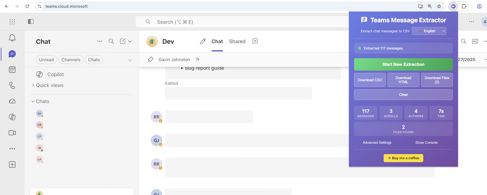
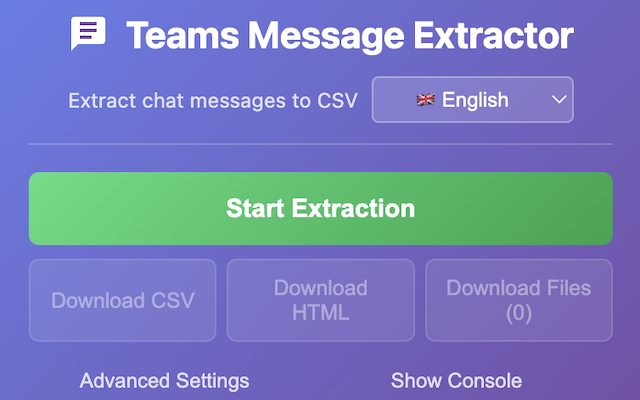

Keep a complete copy of your Teams conversations.
One click exports any Microsoft Teams chat or channel — messages, images, files and reactions — to clean, self-contained files. No admin rights, and nothing ever leaves your browser.
Add to Chrome — it's free 10,000+ users

Eksportér chatbeskeder, filer, billeder og emoji-reaktioner fra Microsoft Teams til CSV eller HTML. Udvidelsen ruller automatisk gennem hele chathistorikken, så du får en komplet backup til arkivering, og alle vedhæftede filer samles i ét ZIP-arkiv.
Teams Message Extractor ruller automatisk gennem hele din samtalehistorik, fra den allerførste besked til den nyeste, og eksporterer alt til en ren og struktureret CSV-fil eller en selvstændig HTML-udskrift. Vedhæftede filer downloades som ét samlet ZIP-arkiv, så du slipper for snesevis af gemmedialoger. Fungerer med direkte beskeder, gruppechats og kanaler på alle tre Teams-domæner (teams.microsoft.com, teams.live.com, teams.cloud.microsoft).
Nyt i 2.9.0
- Nyt
udtræk af kanalindlæg. Trådede samtaler eksporteres med alle indlejrede svar, inklusive emne og trådstruktur. - Ny Markdown-eksport, ideel til at indsætte i noter, wikier eller AI-værktøjer.
- CSV-eksporten åbner nu korrekt i Excel, og danske tegn (æ, ø, å) bliver ikke længere ødelagt.
- Indsatte billeder og skærmbilleder fanges nu pålideligt, også i det nye teams.cloud.microsoft-layout, hvor mange tidligere blev overset.
- Skærmbilleder indlejres direkte i HTML-udskriften, så billederne vises i selve eksporten og ikke kun som links.
- Original billedkvalitet
vedhæftede filer gemmes som den nøjagtige originalfil uden genkomprimering.
Hvad bliver fanget
- Afsendernavne og tidsstempler
- Fuldt beskedindhold
- Emoji-reaktioner (pr. besked, med antal)
- Vedhæftede filer, billeder og deres URL-adresser
- Komplette samtaletråde
Sådan fungerer det
- Åbn en hvilken som helst Teams-samtale i din browser
- Klik på udvidelsens ikon
- Udvidelsen ruller automatisk til allerførste besked og fanger hver eneste besked
- Download som CSV, HTML eller ét samlet ZIP-arkiv
Perfekt til
- Arkivering af vigtige samtaler, før de går tabt
- Compliance- og revisionskrav
- Offline-søgning i gammel chathistorik
- Backup af projektdiskussioner og beslutninger
- Datamigrering eller oprettelse af optegnelser
- HR- og juridiske dokumentationsbehov
Nøglefunktioner
- Fuld automatisk rulning
hele chathistorikken fanges automatisk, helt uden manuel rulning - Fungerer overalt i Teams
direkte beskeder, gruppechats, kanaler og alle tre Teams-domæner - Flere eksportformater
CSV til regneark og HTML til en formateret udskrift med reaktioner og klikbare links til vedhæftede filer - Streamende ZIP-downloads
alle vedhæftede filer i ét arkiv med ZIP64-understøttelse af arkiver over 4 GB og DEFLATE-komprimering af tekstfiler - Emoji-reaktioner
fanges pr. besked og vises i både CSV og HTML - Downloads kører uafhængigt af pop op-vinduet
luk det, og ZIP-filen streames videre til disken i baggrunden - Privatlivet i fokus
al behandling sker lokalt i din browser, og ingen data sendes til eksterne servere - Fås på 20 sprog med understøttelse af højre-til-venstre-skrift til arabisk og urdu
- Let og hurtig
Ansvarsfraskrivelse
Dette værktøj leveres "som det er", uden nogen form for garanti, hverken udtrykkelig eller underforstået. Jeg fremsætter ingen påstande om nøjagtigheden, pålideligheden, fuldstændigheden eller egnetheden af denne software til noget formål. Ved at bruge dette værktøj anerkender du, at du alene er ansvarlig for overholdelse af din organisations IT-politikker og enhver gældende databeskyttelseslovgivning (GDPR mv.). Du bør indhente de nødvendige tilladelser, før du udtrækker arbejdsrelateret kommunikation. De udtrukne data kan indeholde følsomme eller fortrolige oplysninger, som skal håndteres på passende vis. Jeg påtager mig intet ansvar for skader, datatab, brud på privatlivets fred eller andre konsekvenser, der opstår som følge af brugen af dette værktøj. Dette er et uofficielt værktøj, som ikke er tilknyttet eller godkendt af Microsoft.
The right format for every job
| CSV | Spreadsheets, BI tools, compliance registers |
| HTML | A browseable transcript with images embedded at original quality |
| Markdown | Notes apps, wikis, and pasting into AI tools |
| ZIP | Every attachment in one archive, original files untouched |
Common questions
Do I need admin rights or IT approval?
No. It runs entirely in your own browser against the Teams page you already have open, using your existing sign-in. There is nothing to install server-side and no tenant configuration.
Does my data leave my computer?
Never. Extraction, formatting and file generation all happen locally in your browser. There are no third-party servers, no analytics and no trackers in the extension.
Does it export channel posts and threads, not just chats?
Yes. It walks a channel's Posts feed thread by thread and captures every nested reply, even in threads with thousands of replies — including the subject line and thread structure.
Does it work behind my company's security proxy?
Yes. Proxied Teams domains such as Microsoft Defender for Cloud Apps (MCAS) are supported, and any other hostname-rewriting proxy works via a one-click fallback.
What does it cost?
It is free today. A paid Pro tier for power features is planned; existing users keep everything they have and get an early supporter discount — see the Paid Model FAQ.
Se det i brug

Support
Spørgsmål, fejlrapporter eller funktionsønsker: adamltoms@gmail.com